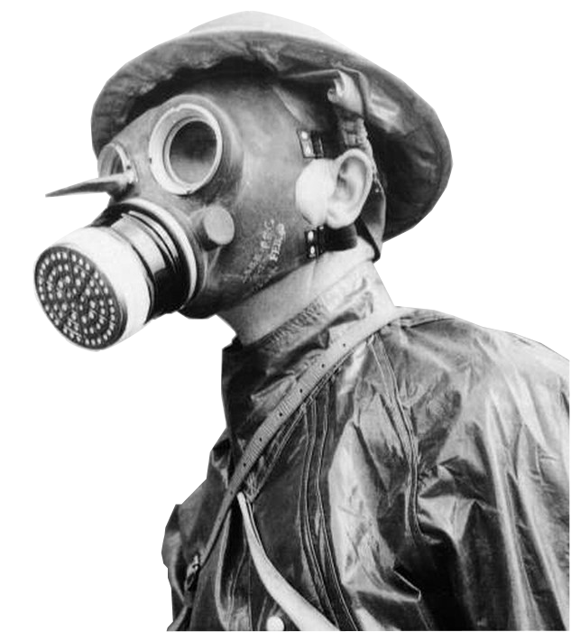

Primeira Guerra Mundial · 1914–1918
A Primeira Guerra Mundial trouxe novas armas, como o gás venenoso, a metralhadora e a artilharia pesada, e, com elas, a necessidade de novas formas de proteção. Este projeto explora os equipamentos de proteção individual (EPIs) criados e adaptados durante o conflito, como máscaras de gás, capacetes de aço e uniformes. O site mostra como cada um funcionava e como mudou a forma de sobreviver no campo de batalha.
